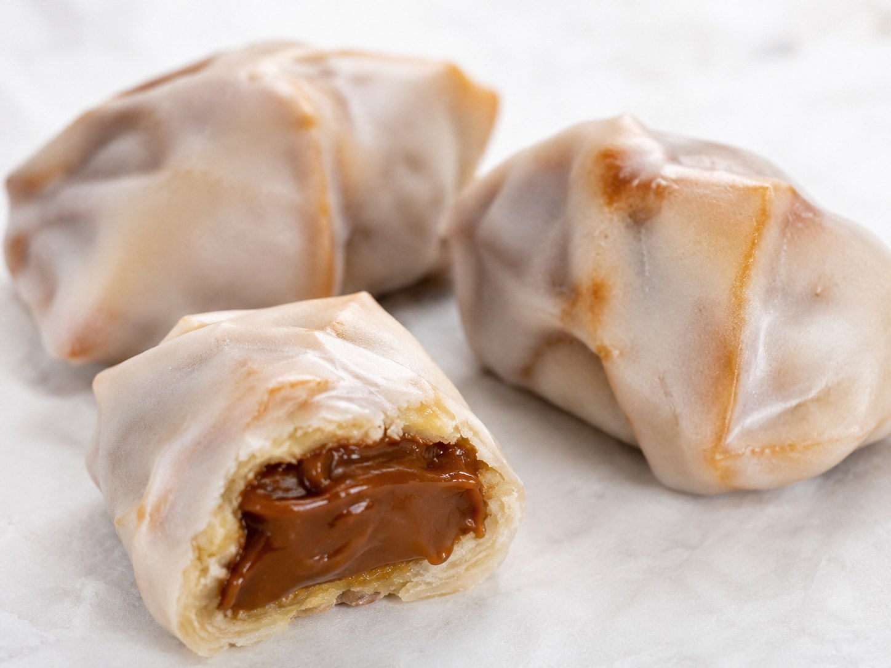
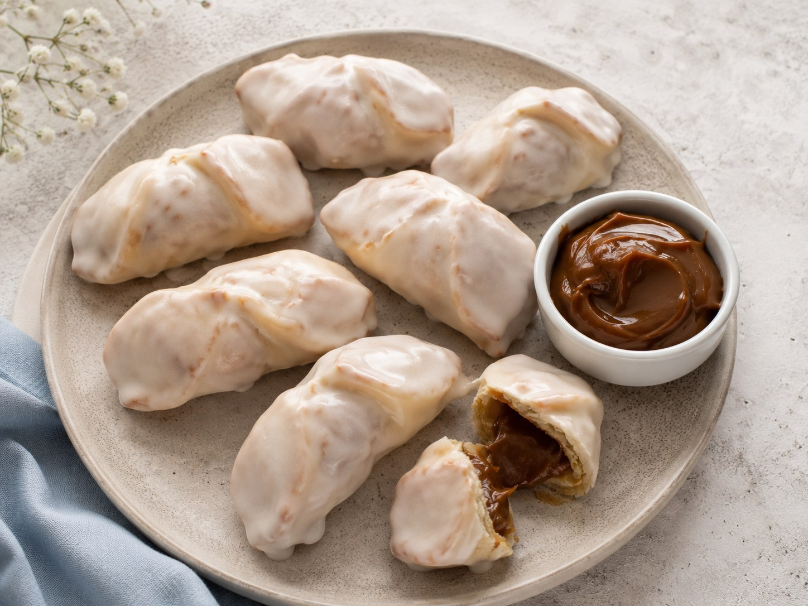

Gaznates
Dulces regionales de masa crocante, formados alrededor de un molde cilíndrico y rellenos con una mezcla suave de dulce de leche y crema batida.
Dulzura de celebración
Los gaznates suman a Misky Stack una receta de fiesta: masa crocante, relleno cremoso y una presentación llamativa. Refuerzan la idea de una pastelería regional que conserva técnicas tradicionales y las muestra de forma moderna.
Ingredientes
Masa
- Harina
- Polvo para hornear
- Sal
- Mantequilla derretida
- Agua tibia
- 1 huevo
Relleno y terminación
- Crema para batir
- Dulce de leche
- Azúcar impalpable para espolvorear
Preparación
- Tamizar en un recipiente la harina, el polvo de hornear y la sal.
- Agregar la mantequilla derretida, el agua tibia y el huevo.
- Mezclar hasta obtener una masa suave y homogénea.
- Amasar durante unos minutos sobre una superficie enharinada, hasta que esté lisa y elástica.
- Formar una bola, envolverla en film y dejarla reposar en la heladera durante al menos 30 minutos.
- Precalentar el horno a 180 grados.
- Estirar la masa hasta lograr un grosor aproximado de 3 a 4 mm.
- Cortar tiras de unos 5 cm de ancho y enrollarlas alrededor de moldes cilíndricos o conos de metal.
- Colocar los moldes en una bandeja y hornear durante 15 a 20 minutos, hasta que estén dorados y crujientes.
- Dejar enfriar completamente y retirar los gaznates de los moldes con cuidado.
- Batir la crema hasta obtener picos suaves y mezclarla con dulce de leche.
- Rellenar los gaznates con manga pastelera o cuchara.
- Espolvorear con azúcar impalpable justo antes de servir.
Presentaciones

